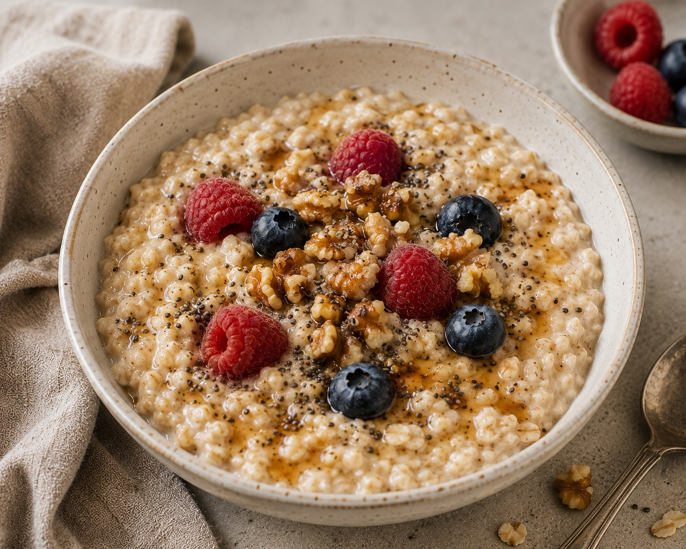
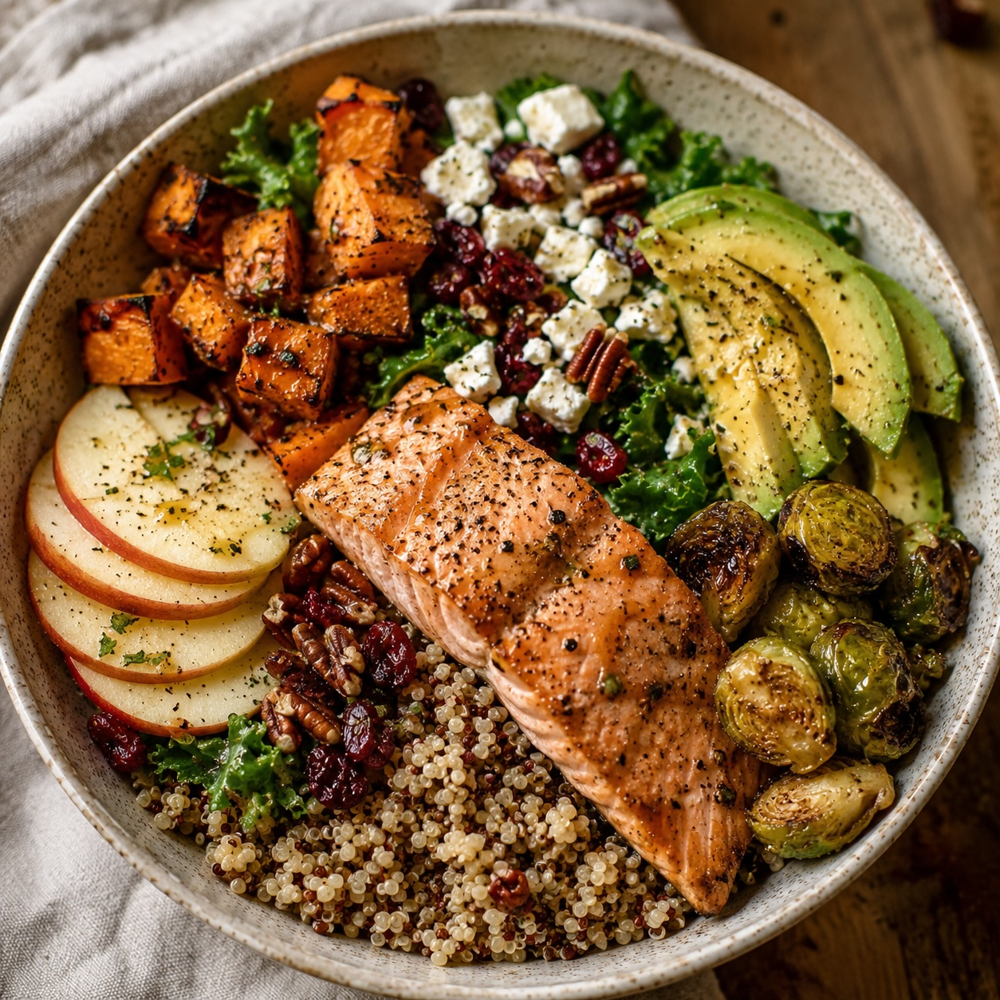

BALANCED EATING
What Does a Balanced Diet Actually Look Like?
A practical look at balance, variety, adequacy, and moderation without turning healthy eating into rigid rules.
Read More →NUTRITION
Evidence-informed guidance, practical ideas, and everyday recipes to help you understand food and nutrition in the context of your life.

EXPLORE NUTRITION
Everything shown here links to content that currently exists on My Simple Health.
BALANCED EATING
A practical look at balance, variety, adequacy, and moderation without turning healthy eating into rigid rules.
Read More →
EVERYDAY NUTRITION
Use flexible meal ideas and familiar foods to create satisfying meals without needing a perfect formula.
Explore Balanced Eating →
RECIPES
Browse everyday recipes that make room for nourishment, preference, convenience, and real life.
Browse Recipes →KEEP EXPLORING
LEARN
Understand a flexible approach to balance, variety, adequacy, and moderation.
Explore →